BY: Dassana Amit
First, a bit of back story: It’s interesting to know that Fettuccine Alfredo was originally invented by Alfredo Di Lelio in his mother’s restaurant in Italy in the mid-1900s. The original recipe was very simple and only included butter and cheese, and it wasn’t until much later than cream was added. Nowadays you can find this classic dish on nearly every Italian menu and in every pasta cookbook. Some fettuccine alfredo recipe variations use eggs, others use light cream to create a decadent alfredo sauce with parmesan. I’ve tried several different preparation methods, and this easy fettuccine alfredo recipe is by far my favorite. It uses heavy whipping cream for the creamiest, tastiest fettuccine alfredo ever!
Ingredients
-
Prep Time
20 minutes mins -
Cook Time
10 minutes mins -
Total Time
30 minutes mins -
Cuisine
Italian, World -
Course
Brunch,
Main Course,
Snacks -
Diet
Vegetarian -
Difficulty Level
Moderate
- Deep pan or Sauce pan
- Stirring Spoon
- Tongs
- Wired whisk
Equipment
Step-by-Step Guide
STEP 1:
In a deep pan or a sauce pan on the stovetop add 6 cups of water and 1 to 1.5 teaspoons of salt. 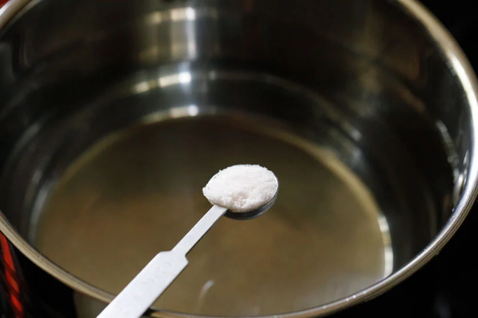-
STEP 2:
Stir, turn the heat onto high and bring the water to a boil 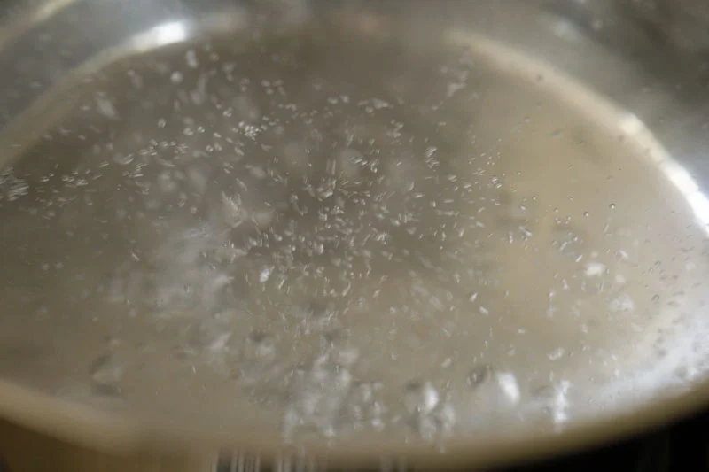 STEP 3:
Once the water is to a full boil, add the 226 grams (½ a pound or 8 ounces) of fettuccine pasta or other pasta of choice.
-
STEP 4:
Use a spoon to push the fettuccine down into the boiling water as they soften, until fully submerged. 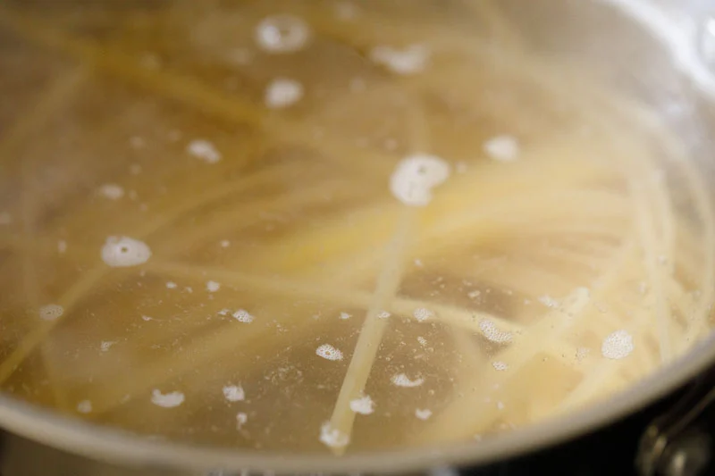 STEP 5:
Continue to boil the pasta on medium to high heat.
STEP 6:
Cook according to package instructions, until the pasta is just al dente. That means cooked through but with a slight bite – so that the pasta are still toothsome. 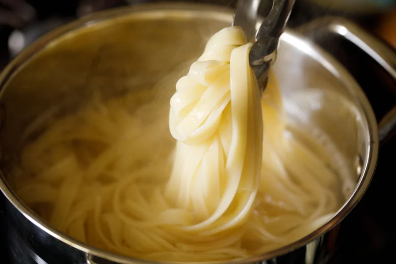-
STEP 7:
Drain the water, making sure to save and set aside about a ½ cup of the cooked pasta water. You might want to use a bit to thin out the alfredo sauce. STEP 8:
While the pasta is boiling, start to prepare the alfredo sauce. In a medium, deep skillet melt 3 to 4 tablespoons of salted or unsalted butter (approximately 40 grams) on low heat. If using salted butter you’ll want to add less salt to finish the dish. 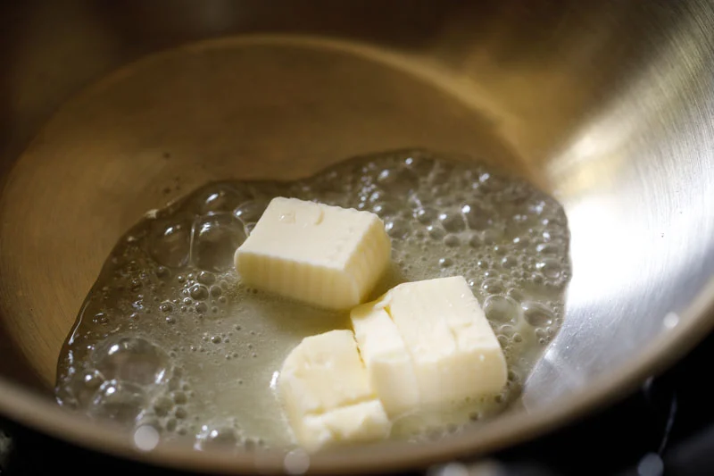STEP 9:
Once the butter has melted, add ½ a teaspoon of finely chopped garlic. Sauté for a few seconds until the raw aroma of garlic goes away. No need to brown the garlic. 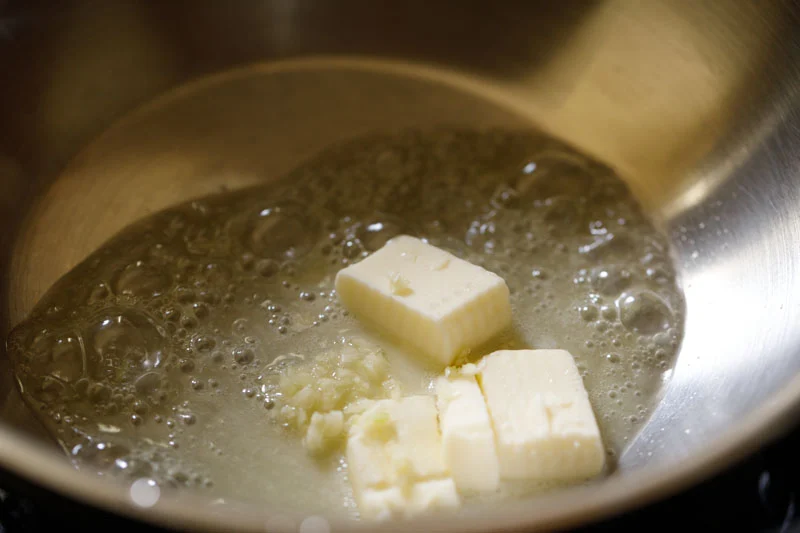-
STEP 10:
Next add 1 cup of heavy whipping cream. 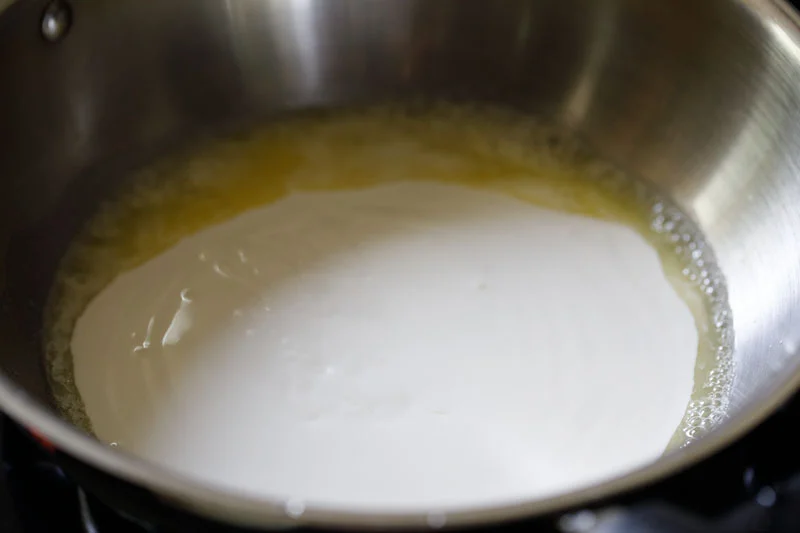 -
STEP 11:
Mix well with a wired whisk. Bring the cream to a gentle boil on low heat. Use a whisk and continuously stir as you bring the cream mixture to a low simmer. Keep an eye on the cream to make sure it does not get brown or burnt. 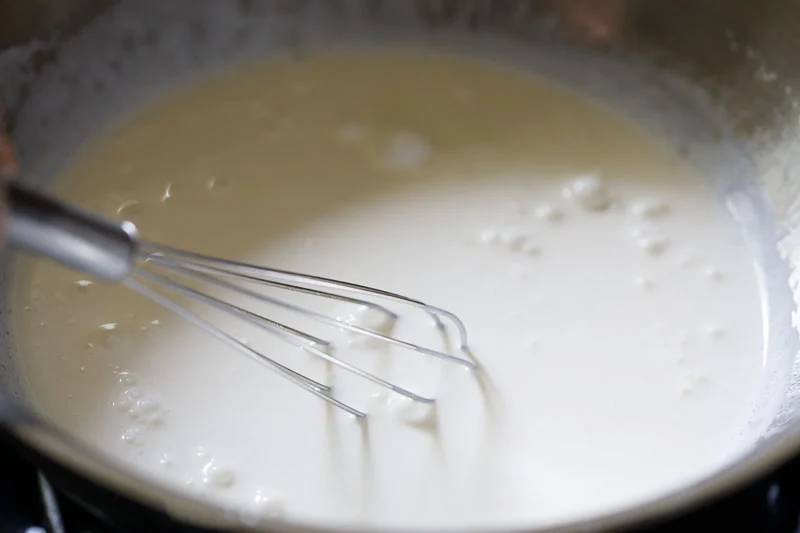 STEP 12:
After the cream begins to gently boil, further simmer for 1 to 2 minutes, until the cream thickens a bit. 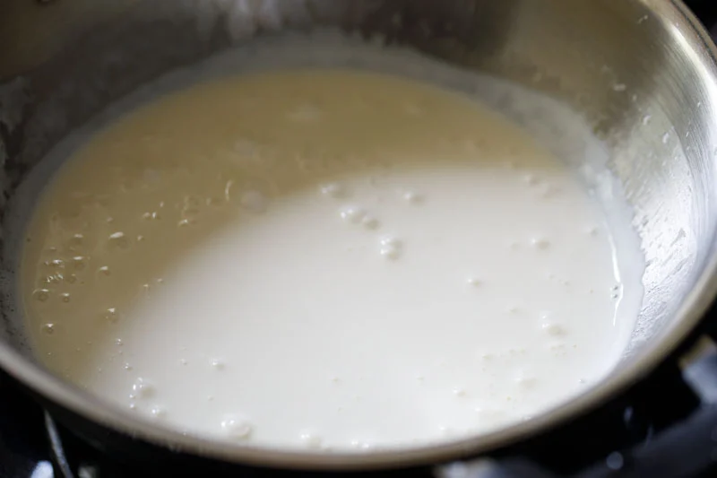STEP 13:
Then add 6 tablespoons (50 grams) of grated vegetarian parmesan cheese to the pan. 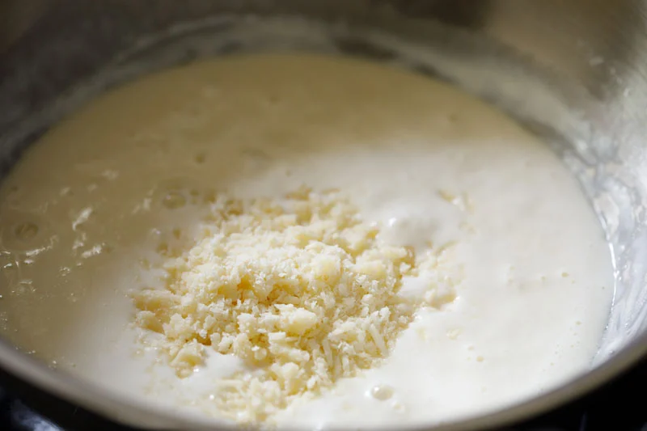STEP 14:
Mix well to combine the cheese with the cream.-
STEP 15:
Now add the cooked and drained pasta to the prepared alfredo sauce in the pan. STEP 16:
Use tongs to thoroughly mix the pasta and sauce together, so that every noodle is coated in creamy alfredo. 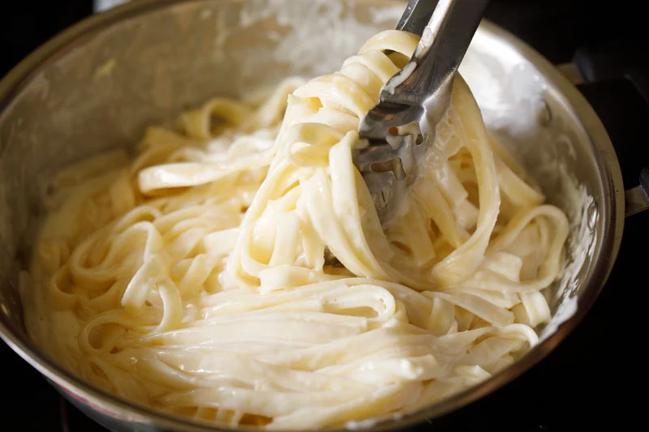-
STEP 17:
Continue to cook the fettuccine alfredo on low heat for another minute or two, stirring frequently to keep the pasta from sticking together. If the sauce becomes too thick, add a bit of the reserved pasta water, and stir. STEP 18:
Taste the dish, and season with salt according to your taste preferences and a ¼ teaspoon of crushed black pepper. I also recommend adding a light grating of fresh nutmeg for an earthy, aromatic pop of flavor. 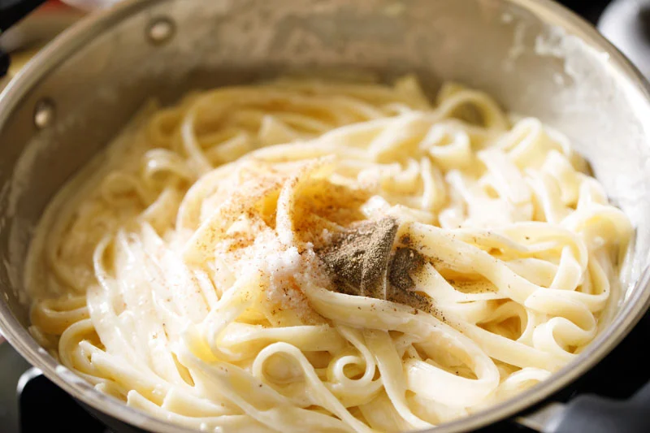STEP 19:
Mix the fettuccine alfredo again, and turn off the heat. fettuccine alfredo in panSTEP 20:
Serve the pasta hot.
I like to garnish fettuccine alfredo with a tablespoon of grated vegetarian parmesan cheese and 1 to 2 teaspoons of chopped parsley, fresh or dried. Leftovers will keep well stored in an airtight container for 1 to 2 days in the refrigerator. On refrigeration the pasta will thicken, so while reheating add a splash of milk or water to thin the consistency slightly.
Tips & Tricks
Cream: I have used whipping cream in this alfredo sauce recipe. However, for a lighter version you can use low fat/light cream or cooking cream or half and half.
Butter: Make the alfredo sauce with salted or unsalted butter. If using salted butter, then be mindful of salt when adding later to the pasta.
Seasonings: The seasonings are minimal in this dish. You can spice it up by adding a bit more of crushed black pepper. You can also use white pepper or cayenne pepper.
Veggies: My vegetarian recipe of fettuccine alfredo is super simple, but feel free to add your favorite cooked veggies. You can either sauté, steam or roast them. Broccoli, carrots, green peas, sweet corn, mushrooms, bell peppers, baby corn, asparagus, cauliflower, spinach – or any vegetables you like are some delicious options.
Pasta: Traditionally, alfredo sauce is served with fettuccine. But you really can use any pasta you prefer or like. Make this delicious alfredo pasta with penne, pappardelle, macaroni, rigatoni, farfalle, or whatever you’ve got.
- Amount Per Serving
- Calories 712 Calories from Fat 423
- % Daily Value*
- Fat 47g72%
- Saturated Fat 28g175%
- Trans Fat 1g
- Polyunsaturated Fat 3g
- Monounsaturated Fat 13g
- Cholesterol 210mg70%
- Sodium 646mg28%
- Potassium 264mg8%
- Carbohydrates 57g19%
- Fiber 3g13%
- Sugar 2g2%
- Protein 17g34%
- Vitamin A 1662IU33%
- Vitamin B1 (Thiamine) 1mg67%
- Vitamin B2 (Riboflavin) 1mg59%
- Vitamin B3 (Niacin) 2mg10%
- Vitamin B6 1mg50%
- Vitamin B12 1µg17%
- Vitamin C 1mg1%
- Vitamin D 1µg7%
- Vitamin E 1mg7%
- Vitamin K 6µg6%
- Calcium 236mg24%
- Vitamin B9 (Folate) 27µg7%
- Iron 2mg11%
- Magnesium 61mg15%
- Phosphorus 316mg32%
- Zinc 2mg13%
- * Percent Daily Values are based on a 2000 calorie diet.